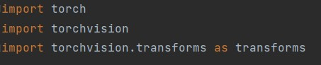

CS1102 Project (2022-2023 Semester A)
Project Group for Lab1_Tue_1600 1
Preparing Dataset
Before training a model, the dataset of images should be normalized and resized to make it more suitable for computer vision.
First of all, we need to import all the required libraries and modules.
Write the path for the training images folder.